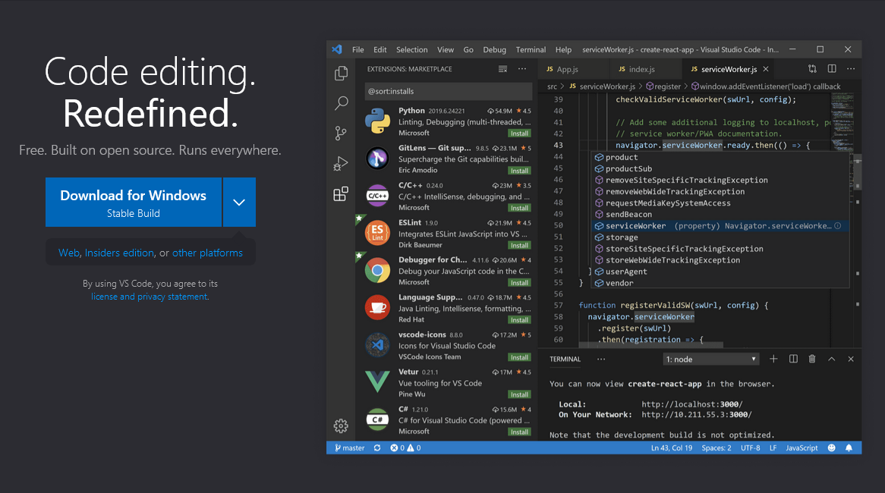
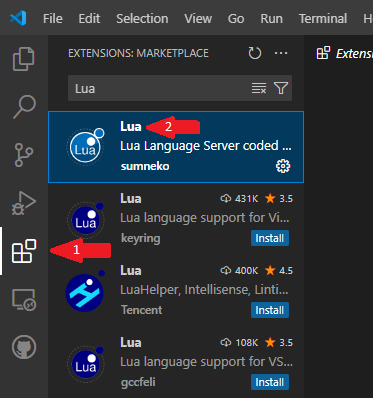
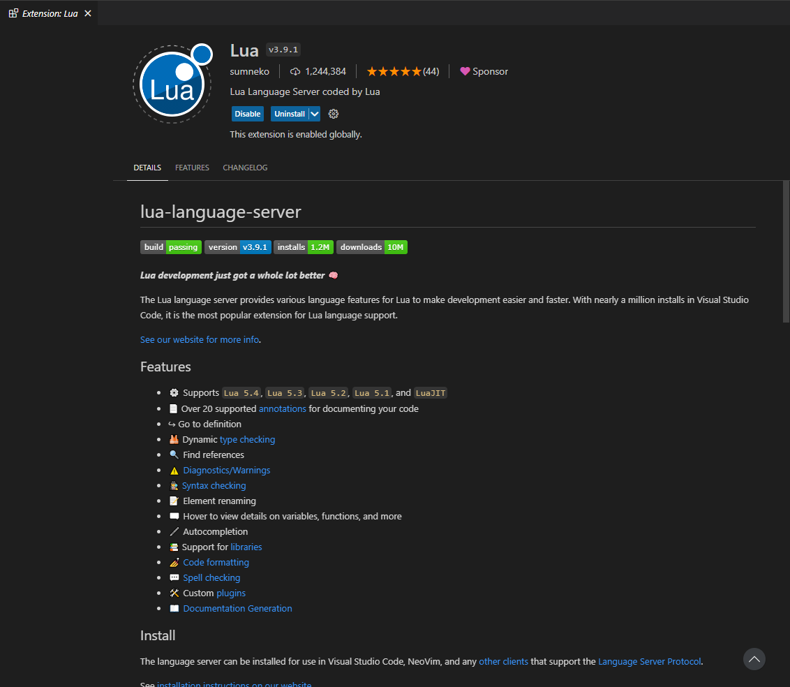
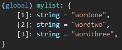

Introduction to Lua
This is a brief introduction to the standard structure and functionality of Lua. While it's not necessary to know everything about the language, having a basic understanding of the langauge goes a long way in mastering OpenRA's scripting behavior. It also serves as a starting point to using a code editor and writing your own code.
Chapters:
Getting Started with VSCode
To get us off the ground, we'll want a suitable code editor for a job. Any type of editor will be suitable for this (even Notepad), but my personal recommendation is Microsoft's Visual Studio Code, primarily because there are extensions available that will make working wtih the Lua and OpenRA languages significantly easier. Thus, I'll show you how to get it set up.
First, you'll want to install VSCode from Microsoft's website. Here's a direct link.
If you're on Windows, you can use the installer directly to install and set up the application. If you're on Debian/Ubuntu, you can use the built-in package manager to install it.
Alternatively, other Linux users can find it using their terminal. For example:
sudo apt install code on Debian/Ubuntu
sudo pacman -S code for Arch Linux users
If you're not sure what version you need, check the VSCode Documentation and your distribution's documentation and forums.
Once your version of VSCode is installed, we're going to get the Lua extension.
First, go the Extensions section on the left-hand side (Arrow 1) and find the Lua extension by sunmeko (Arrow 2). Install it and reload your VSCode session if needed.
This is what the extension page should look like when the Lua extension is installed:
Now we can get into some of the basic Lua functionality.
Lua Basics
There really isn't much to cover here as most of what we do with Lua revolves around the OpenRA side of things, but we will touch on important things to know about the language. If you want an in-depth tutorial, you can check out the one from TutorialsPoint.
Variables
Variables are quite simple to understand. What you're essentially doing is assigning a "value" to a named piece of content that you can then change or access later. The most common types of variables and how they work are:
Integer: a whole number value (value = 100).
String: a set of alphanumeric characters in a row (word = "word").
Float: short for "floating-point value" usually a decimal number value (value = 1.01).
Boolean: literally "true" or "false;" mostly used as a condition (ready = "true").
Function: lets you do multiple things at once. More on them later (thing = function() return end).
You can also add variables together and change the variables' values anywhere in your program. This becomes more useful when we start writing OpenRA scripts.
By default, variables can be accessed anywhere throughout the program no matter what context the variable is used in. To have it be accessed only in the context where it's needed, you can put the word local in front of the variable, like this:
local value = 0
Unlike other computer languages, there isn't much more to add here, as Lua is simplified enough that ther are no conditional statements or standard libraries to worry about. That said, we're not done yet...
Functions
Functions are going to be the backbone of what we're about to do, so we're going to go into detail on how they work. Most of what I'm about to mention here comes from the TutorialsPoint tutorial mentioned at the beginning, so if you want more info, you can check it out here. That said, let's get into the basics.
Functions, as mentioned before, allows you to do multiple things all at once within a certain context and output the results to another variable if needed, and they can even accept variables as "parameters" that can be used inside the function. For example:
mything = function(value1, value2)
print(value1)
print(value2)
return value1 + value2
end
What we're doing here is taking two integer values, displaying them, and then returning the sum of the two values added together. To use this function, you simply just have to do:
value3 = mything()
You can also reference other functions within said function, such as:
myadd = function(v1, v2)
return v1 + v2
end
mything = function()
value1 = myadd(20, 40)
value2 = myadd(30, 50)
return value1 - value2
end
Functions also allow us to use "conditional statements," which are basically built-in functions that allow us to only make something happen when a condition is met. For example:
mycondition = function(a)
if a > 10 then
print(a)
end
end
These becomes useful when we get to OpenRA scripting, especially for recurring statements (i.e. statements which reference themselves). While basic in concept, we'll see more advanced techniques later on that will make them essential to our program.
Lists
The final big topic I wanted to touch on is Lists, which are essentially for some of the things we do in OpenRA. Lists (or Arrays, as they're often called) contain more tham one value of a specific variable type, and we can specify which one we want to access by providing the name of a list followed by a number in brackets ([ ]).
A basic list looks like this:
mylist = {"wordone", "wordtwo", "wordthree"}
VSCode will usually tell you extrea information about a list, such as the position and the type of a certain value in the list, as shown here:
By referencing these numbers, every item in the list can be accessed, like this:
printlist = function(list)
print(list[1])
print(list[2])
print(list[3])
end
You can use just about any variable tpye inside of lists (even functions) and they can be of any length. This will become handy for understanding how OpenRA's API handles them, and we'll also be making use of them in our scripts frequently, so this is an important one to master.
That's all we're going to cover on Lua for now! We can now begin to look into OpenRA's API and its implementation!